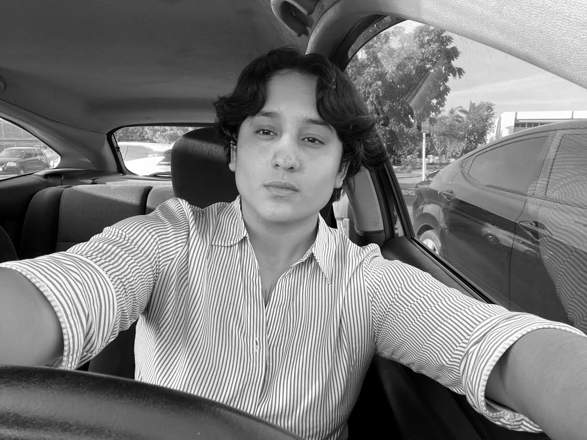

UN ESPACIO PERSONAL DE IDEAS
Hola, mundo.
Un lugar para pensar en voz alta, cuestionar lo establecido y escribir sobre todo aquello que merece ser pensado.
— Vale
ENTRADA DESTACADA · FILOSOFÍA
¿Y si todo lo personal fuera político?
Una reflexión sobre la manera en que nuestras experiencias individuales están atravesadas por estructuras sociales, culturales y políticas.
THE PERSONAL ARCHIVE
El archivo
No hay entradas que coincidan. Prueba otra búsqueda.

A LITTLE ABOUT ME
Hola, soy Vale.
Tengo 21 años, estudio Derecho y tengo una curiosidad casi obsesiva por entender el mundo y cuestionar aquello que solemos dar por sentado.
Me interesan la filosofía, la sociología, la política, el feminismo, la literatura y las contradicciones de la condición humana.
Entre Dostoyevski, las poetas latinoamericanas y las preguntas que probablemente nunca resolveré, nace este pequeño rincón de internet.
No pretendo tener todas las respuestas. Solo quiero pensar, escribir, cuestionar y, de vez en cuando, cambiar de opinión.
Everything is worth questioning.